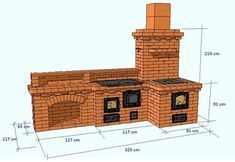
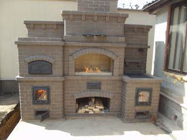

Duonkepės Panasonic | MIKRODELTA

mikrodelta.lt - Panasonic atstovas Sveiki atvykę! Parašykite mums Tel. 8 37 209452
Konsultuojame I-V 10.00 - 17.00 val. Mano paskyra Mano pažymėti Mano krepšelis Pirkti Prisijungti Pradžia Vaizdo technika Televizoriai OLED televizoriai 4K Ultra HD televizoriai Full HD televizoriai HD televizoriai TV priedai TV staliukai, stovai, laikikliai 3D akiniai WiFi adapteriai Skype kameros Vaizdo grotuvai Blu-ray grotuvai DVD grotuvai Įrašantys DVD grotuvai Vaizdo grotuvų priedai Vaizdo kameros Vaizdo kameros Akumuliatoriai kameroms Akumuliatorių įkrovikliai Priedai vaizdo kameroms Atminties kortelės mini DVD diskai Vaizdajuostės Fototechnika Fotoaparatai Sisteminiai fotoaparatai Kompaktiniai fotoaparatai Akumuliatoriai fotoaparatams Akum. įkrovikliai fotoaparatams Objektyvai ir priedai Blykstės Krepšiai fotoaparatams Atminties kortelės Foto popierius ir printeriai Jungiamieji laidai Diskai Garso technika Hi-Fi, High-End garso kolonėlės Grindinės garso kolonėlės Lentyninės garso kolonėlės Centrinės garso kolonėlės Žemų dažnių garso kolonėlės Garso kolonėlių komplektai SPIRIT serija 95 serija 99 serija CINEMA serija DIVINE serija SUB17 serija TUNE serija Pakabinamos garso kolonėlės Sieninės garso kolonėlės Hi-Fi, High-End garso stiprintuvai Namų kino sistemos Belaidžių kolonėlių sistemos Pailgosios garso sistemos Muzikiniai centrai Hi Fi Mini centrai Mikro centrai Magnetolos Radijo imtuvai Diktofonai MP3/MP4 grotuvai, ausinukai Ausinės ir mikrofonai Belaidės ausinės Hi Fi ausinės Ausinės su lankeliu Kišamos į ausis ausinės Bluetooth ausinės Ausinės su mikrofonu Mikrofonai Automobilinė technika Automobiliniai grotuvai Garsiakalbiai Garso stiprintuvai Priedai Laidai garso technikai Biuro ir ryšio įranga Ryšio įranga Fiksuoto ryšio telefonai Belaidžiai telefonai Telefonų papildomi rageliai Laidiniai telefonai Akumuliatoriai telefonams Ausinės telefonams Priedai telefonams Daugiafunkciniai aparatai Faksai Eksploatacinės medžiagos faksams Biuro technika Stebėjimo sistemos IP stebėjimo kameros IP įrašymo įrenginiai Analoginės kameros Programinė įranga, priedai Objektyvai, linzės Atminties įrenginiai Konverteriai, keitikliai LAN RG Buitinė technika Stambi buitinė technika Šaldytuvai Skalbimo mašinos Smulki buitinė technika Buičiai Virtuvei Mikrobangų krosnelės Duonkepės Sulčiaspaudės Virtuviniai kombainai Grožiui ir sveikatai Barzdaskutės Plaukų kirpimo mašinėlės Priedai, atsarginės dalys Veidui, odai Epiliatoriai, skustuvai Plaukų priežiūrai Nagų priežiūrai Burnos priežiūrai Dantų šepetėliai Burnos irigatoriai, plovikliai LED lemputės Akumuliatoriai, elementai Įkraunami elementai Akumuliatorių įkrovikliai Cilindriniai elementai Diskiniai elementai Servisas Panasonic servisas Technikos remontas Detalių užsakymas Vaizdo technika Televizoriai OLED televizoriai 4K Ultra HD televizoriai Full HD televizoriai HD televizoriai TV priedai TV staliukai, stovai, laikikliai 3D akiniai WiFi adapteriai Skype kameros Vaizdo grotuvai Blu-ray grotuvai DVD grotuvai Įrašantys DVD grotuvai Vaizdo grotuvų priedai Vaizdo kameros Vaizdo kameros Akumuliatoriai kameroms Akumuliatorių įkrovikliai Priedai vaizdo kameroms Atminties kortelės mini DVD diskai Vaizdajuostės Fototechnika Fotoaparatai Akumuliatoriai fotoaparatams Akum. įkrovikliai fotoaparatams Objektyvai ir priedai Blykstės Krepšiai fotoaparatams Atminties kortelės Foto popierius ir printeriai Jungiamieji laidai Diskai Garso technika Hi-Fi, High-End garso kolonėlės Grindinės garso kolonėlės Lentyninės garso kolonėlės Centrinės garso kolonėlės Žemų dažnių garso kolonėlės Garso kolonėlių komplektai Pakabinamos garso kolonėlės Sieninės garso kolonėlės Hi-Fi, High-End garso stiprintuvai Namų kino sistemos Belaidžių kolonėlių sistemos Pailgosios garso sistemos Muzikiniai centrai Hi Fi Mini centrai Mikro centrai Magnetolos Radijo imtuvai Diktofonai MP3/MP4 grotuvai, ausinukai Ausinės ir mikrofonai Belaidės ausinės Hi Fi ausinės Ausinės su lankeliu Kišamos į ausis ausinės Bluetooth ausinės Ausinės su mikrofonu Mikrofonai Automobilinė technika Automobiliniai grotuvai Garsiakalbiai Garso stiprintuvai Priedai Laidai garso technikai Biuro ir ryšio įranga Ryšio įranga Fiksuoto ryšio telefonai Daugiafunkciniai aparatai Faksai Eksploatacinės medžiagos faksams Biuro technika Stebėjimo sistemos IP stebėjimo kameros IP įrašymo įrenginiai Analoginės kameros Programinė įranga, priedai Objektyvai, linzės Atminties įrenginiai Konverteriai, keitikliai LAN RG Buitinė technika Stambi buitinė technika Šaldytuvai Skalbimo mašinos Smulki buitinė technika Buičiai Virtuvei Grožiui ir sveikatai LED lemputės Akumuliatoriai, elementai Įkraunami elementai Akumuliatorių įkrovikliai Cilindriniai elementai Diskiniai elementai Servisas Panasonic servisas Technikos remontas Detalių užsakymas Pradžia / Buitinė technika / Smulki buitinė technika / Virtuvei / Duonkepės
Duonkepės
Ar norite, kad ryte Jus pažadintu šviežiai iškeptos duonos aromatas ar kasdien mėgautis namine gardžia duona? Jus padės Panasonic duonos kepimo krosnelė – duonkepe. Su Panasonic duonkepe duonos kepimas tapo paprastas ir greitas: reikia tik sudėti komponentus į maišymo-kepimo konteinerį, pasirinkti programą ir paspausti mygtuką… Viskas, po kelių valandų duona iškepta! Minimalus kiekis vargo, o rezultatas puikus. Duonkepės sumaišys, iškildins ir iškeps duoną už Jus. Net ir nebrangios duonkepės iškeps skanią duoną ir saldžius kepinius.
3 Prekės
Rodyti 12 24 36 per puslapįRodyti: Tinkleliu Sąrašu
Rūšiuoti pagal Pozicija Pavadinimas KainaDuonkepė Panasonic SD-2501WXE
155,00 €klausti
Pažymėti | Palyginti %Duonkepė Panasonic SD-ZB2512KXE
Sena kaina: 239,99 €
Akcijinė kaina 208,00 €
PIRKTI Pažymėti | PalygintiDuonkepė Panasonic SD-ZX2522KXS
299,99 € PIRKTI Pažymėti | Palyginti3 Prekės
Rodyti 12 24 36 per puslapįRodyti: Tinkleliu Sąrašu
Rūšiuoti pagal Pozicija Pavadinimas Kaina Prekių palyginimasJūs nepasirinkote prekių palyginimui.
Mano krepšelisJūsų krepšelis tuščias.
APIE MIKRODELTA
Apie mus Kontaktai Kaip mus rastiINFORMACIJA
Pirkimo taisyklės Prekių grąžinimas Duomenų saugumasPAGALBA
Kodėl registruotis Tax Free Garantinis aptarnavimas © 2020 UAB "MIKRODELTA", Kęstučio 71, 44300 Kaunas, tel. 8 37 209452 Kainos nurodytos su PVM. Kainos ir akcijos el. parduotuvėje gali skirtis nuo „Mikrodelta“ parduotuvėje taikomų akcijų ir kainų.